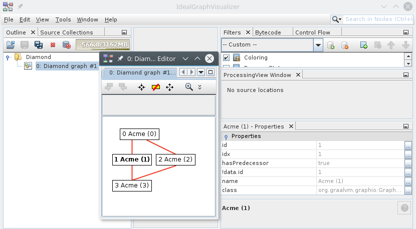

| Interface | Description |
|---|---|
| GraphBlocks<G,B,N> |
Special support for dealing with blocks.
|
| GraphElements<M,F,S,P> |
Representation of methods, fields, their signatures and code locations.
|
| GraphLocations<M,P,L> |
Provides source location information about compiled code.
|
| GraphStructure<G,N,C,P> |
Interface that defines structure of a compiler graph.
|
| GraphTypes |
Special support for dealing with enums.
|
| Class | Description |
|---|---|
| GraphOutput<G,M> |
Instance of output to dump informations about a compiler compilations.
|
| GraphOutput.Builder<G,N,M> |
Builder to configure and create an instance of
GraphOutput. |
GraphOutput
specialized for your data is a matter of implementing a single interface:
class AcmeGraphStructure implementsTheGraphStructure<AcmeGraph, AcmeNode, AcmeNodeType, AcmePorts> { @Overridepublic AcmeGraph graph(AcmeGraph currentGraph,Objectobj) { return obj instanceof AcmeGraph ? (AcmeGraph) obj : null; } @OverridepublicIterable<? extends AcmeNode> nodes(AcmeGraph graph) { return graph.allNodes(); } @Overridepublic int nodesCount(AcmeGraph graph) { return graph.allNodes().size(); } @Overridepublic int nodeId(AcmeNode node) { return node.id; } @Overridepublic boolean nodeHasPredecessor(AcmeNode node) { return node.id > 0; } @Overridepublic void nodeProperties( AcmeGraph graph, AcmeNode node,Map<String, ? superObject> properties ) { properties.put("id", node.id); } @Overridepublic AcmeNodeType nodeClass(Objectobj) { return obj instanceof AcmeNodeType ? (AcmeNodeType) obj : null; } @Overridepublic AcmeNode node(Objectobj) { return obj instanceof AcmeNode ? (AcmeNode) obj : null; } @Overridepublic AcmeNodeType classForNode(AcmeNode node) { // we have only one type of nodes return AcmeNodeType.STANDARD; } @OverridepublicStringnameTemplate(AcmeNodeType nodeClass) { return "Acme ({p#id})"; } @OverridepublicObjectnodeClassType(AcmeNodeType nodeClass) { return nodeClass.getClass(); } @Overridepublic AcmePorts portInputs(AcmeNodeType nodeClass) { return AcmePorts.INPUT; } @Overridepublic AcmePorts portOutputs(AcmeNodeType nodeClass) { return AcmePorts.OUTPUT; } @Overridepublic int portSize(AcmePorts port) { return port == AcmePorts.OUTPUT ? 1 : 0; } @Overridepublic boolean edgeDirect(AcmePorts port, int index) { return false; } @OverridepublicStringedgeName(AcmePorts port, int index) { return port.name(); } @OverridepublicObjectedgeType(AcmePorts port, int index) { return port; } @OverridepublicCollection<? extends AcmeNode> edgeNodes( AcmeGraph graph, AcmeNode node, AcmePorts port, int index ) { if (port == AcmePorts.OUTPUT) { return node.outgoing.targets; } return null; } }
GraphStructure interface defines the set of operations that are
needed by the graph protocol to encode a graph into the IGV expected format. The
graph structure is implemented as a so called
singletonizer API pattern: there is no
need to change your data structures or implement some special interfaces - everything needed is
provided by implementing the GraphStructure operations.
The next step is to turn this graph structure into an instance of
GraphOutput. To do so use the associated
builder just like shown in the following method:
staticNow you are ready to dump your graph into IGV. Where to obtain the right channel? One option is to create aGraphOutput<AcmeGraph, ?> buildOutput(WritableByteChannelchannel) throwsIOException{ returnGraphOutput.newBuilder(acmeGraphStructure()). // use the latest version; currently 6.0 protocolVersion(6, 0). build(channel); }
FileChannel and dump the data into a file
(preferrably with .bgv extension). The other is to open a socket to port
4445 (the default port IGV listens to) and dump the data there. Here is an
example:
static void dump(Call theFiletoFile) throwsIOException{ try (FileChannelch = newFileOutputStream(toFile).getChannel();GraphOutput<AcmeGraph, ?> output = buildOutput(ch); ) { AcmeNode root = new AcmeNode(0); AcmeNode n1 = new AcmeNode(1); AcmeNode n2 = new AcmeNode(2); AcmeNode n3 = new AcmeNode(3); root.linkTo(n1); root.linkTo(n2); n1.linkTo(n3); n2.linkTo(n3); AcmeGraph diamondGraph = new AcmeGraph(root); output.beginGroup(diamondGraph, "Diamond", "dia", null, 0, null); output.print(diamondGraph, null, 0, "Diamond graph #%d", 1); output.endGroup(); } }
dump method with pointer to file diamond.bgv and then you can open the
file in IGV. The result will look like this:

You can verify the behavior directly in the IGV by downloading diamond.bgv file generated from the above diamond structure graph.
The primary IGV focus is on graphs used by the compiler. As such they aren't plain graphs, but contain various compiler oriented attributes:
GraphBlocks,
GraphElements and GraphTypes) are
optional - they don't have to be provided. As such they can be specified via
GraphOutput.Builder instance methods, which may, but need not be
called at all. Here is an example:
staticAll these interfaces follow the singletonizer API pattern again - e.g. no need to change your existing data structures, just implement the operations provided by the interfaces you pass into the builder. By combining these interfaces together you can get as rich, colorful, source linked graphs as the compiler produces to describe its optimizations.GraphOutput<AcmeGraph, ?> buildAll(WritableByteChannelchannel) throwsIOException{GraphBlocks<AcmeGraph, AcmeBlocks, AcmeNode> graphBlocks = acmeBlocks();GraphElements<AcmeMethod, AcmeField, AcmeSignature, AcmeCodePosition> graphElements = acmeElements();GraphTypesgraphTypes = acmeTypes(); returnGraphOutput.newBuilder(acmeGraphStructure()). protocolVersion(6, 0). blocks(graphBlocks). elements(graphElements). types(graphTypes). build(channel); }